速览
《大乱斗》请了非常多作曲家改编了非常多曲子。粗略说明怎么做：首先樱井从各种作品中选好要改编的曲子——这是候选，比实际改编的曲数多不少。接着召集音乐家，讲注意事项。《大乱斗》改编音乐的要点是：节奏感和曲调要适合对战；考虑「3、2、1」的比赛开始倒数，前奏也可以在有效计数之后才开始；以老游戏为原型时有时有点短，所以主旋律放完后展开式地混入别的曲子很有效；这是变化多的游戏，所以包含变调的抑扬是有贡献的方法；最后走向高潮；循环点前奏前后都可以设；时间制是 2 分钟，《特别版》是 2 分半，所以在此之前结束、刚好听到一点循环开头就结束是基本。说明完后，让大家选曲：大家未必熟悉其他游戏，但如果有有感情的曲子，由他负责更好；即使没有，也最好选自己擅长的曲子；也有由这边指定、或对方希望被指定的情况，那时会从那位音乐家似乎擅长的方向选。具体谁擅长什么想说说，但不全说就不公平，在此保密。各音乐家带回去，一边确认原曲一边制作；当然樱井检查全部曲子，经过他的监修再打磨。他的监修是通过《特别版》团队内的声音导演进行的：他感觉上懂，但没有音乐专业术语，所以这样最好，实际也很顺利。监修内容比较多的是：节奏感、抑扬、对原曲的再现度、改编方向等。他自己买游戏改编 CD 失望过很多次：有人改编是高兴，但被改造成别的曲子就没意义。从这样的经验出发，重视主旋律的旋律相同——哼出来大致和原曲一样。例如《星球大战》的主题每次都不同，会很别扭吧？顾客是把它当作众多东西之一来听的，无论是同一而老套、还是想做得不同，都应该保持同一性。结果可以在《大乱斗》惊人的音乐库里听到一大堆，请享受。
1. 改编的流程 0:03
《大乱斗》请了非常多作曲家改编了非常多曲子。粗略说明怎么做：
首先樱井从各种作品中选好要改编的曲子：这是候选，比实际改编的曲数多不少。
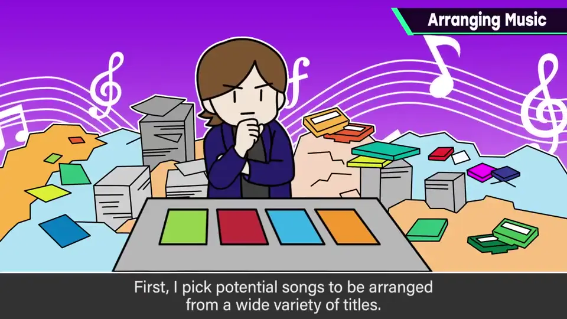
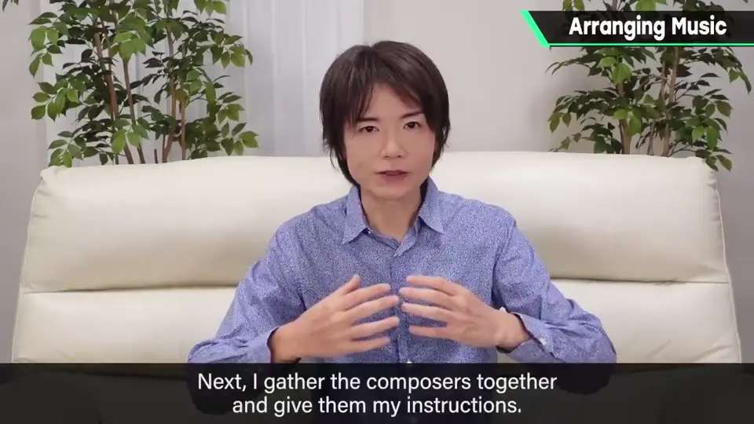
2. 改编的要点 0:33
- 节奏感和曲调要适合对战。
- 考虑「3、2、1」的开始倒数，前奏也可以在有效计数之后才开始。
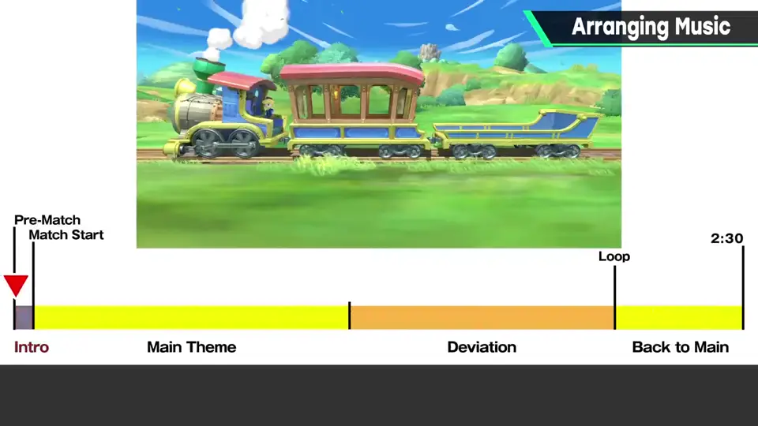
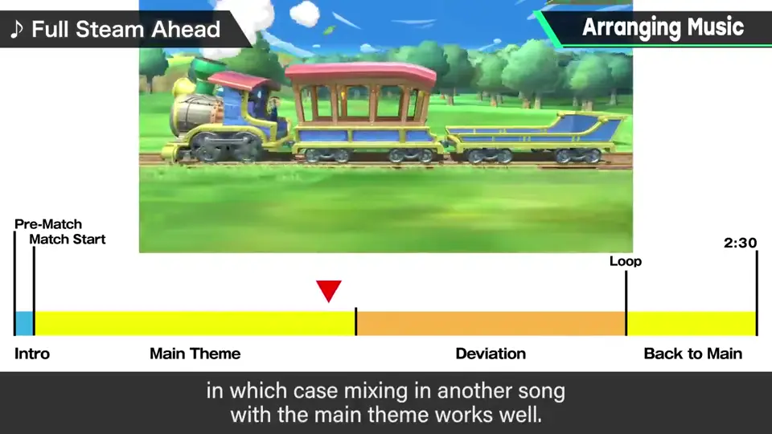
- 以老游戏为原型时有时有点短，所以主旋律放完后展开式地混入别的曲子很有效。
- 这是变化多的游戏，包含变调的抑扬很有贡献；最后走向高潮。
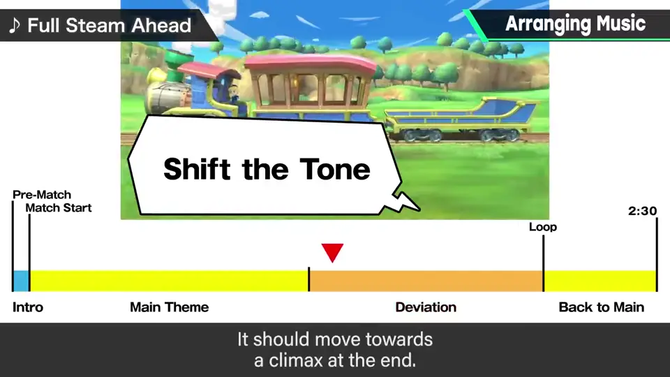
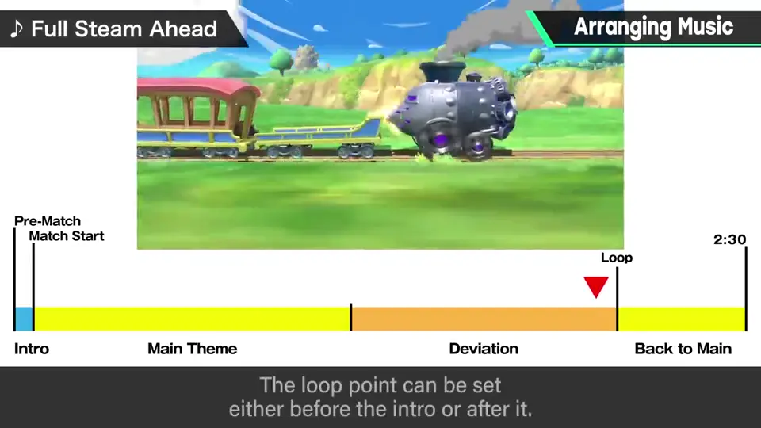
- 循环点前奏前后都可以设。
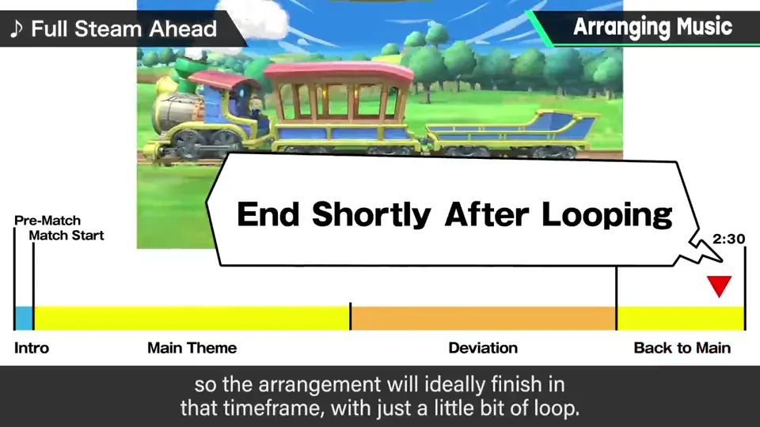
3. 选曲 1:46
说明完后，让大家选曲：大家未必熟悉其他游戏，但如果有有感情的曲子，由他负责更好；即使没有，也最好选自己擅长的曲子。
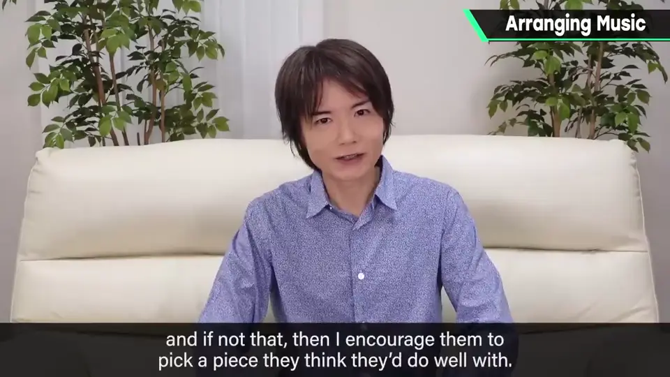
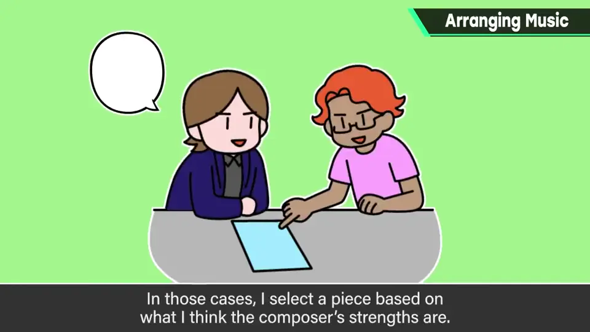
也有由这边指定、或对方希望被指定的情况，那时会从那位音乐家似乎擅长的方向选。具体谁擅长什么，不全说就不公平，在此保密。
4. 制作与监修 2:34
各音乐家带回去，一边确认原曲一边制作；当然樱井检查全部曲子，经过他的监修再打磨。
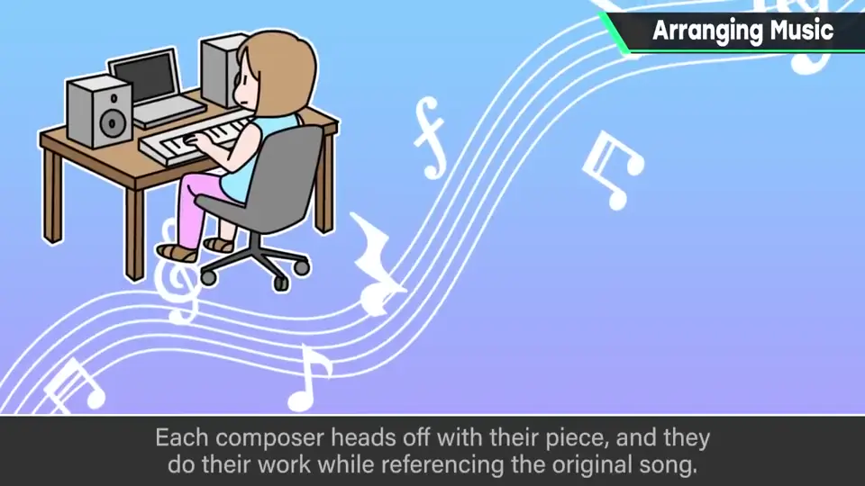
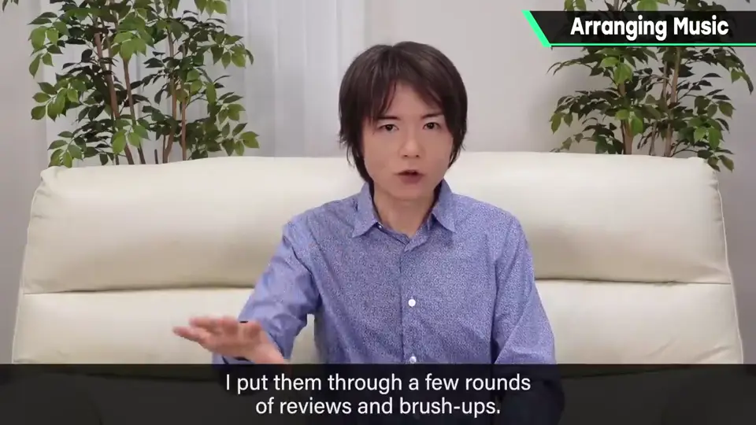
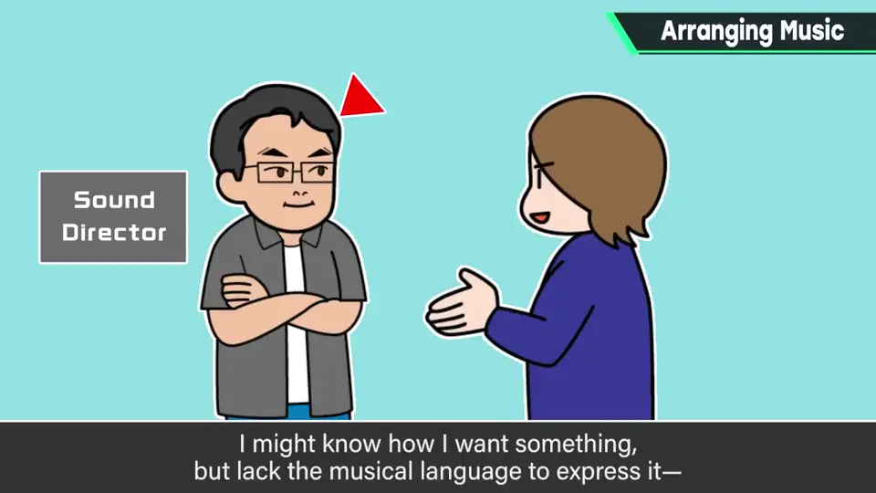
他的监修是通过团队内的声音导演进行的：他感觉上懂，但没有音乐专业术语，所以这样最好，实际也很顺利。
监修内容比较多的是：节奏感、抑扬、对原曲的再现度、改编方向等。
5. 主旋律要相同 3:10
他自己买游戏改编 CD 失望过很多次：有人改编是高兴，但被改造成别的曲子就没意义。
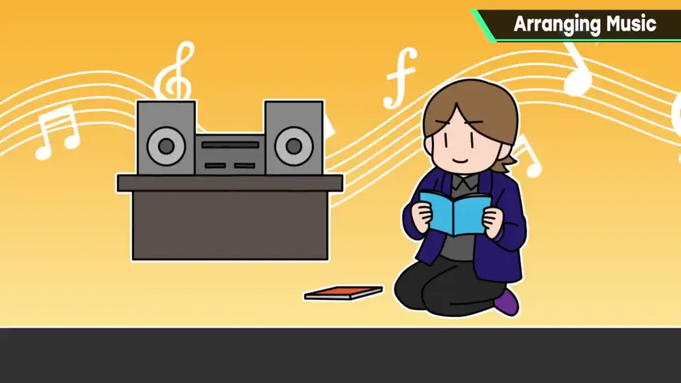
例如《星球大战》的主题每次都不同，会很别扭吧？顾客把它当作众多东西之一来听，无论想做得多不同，都应保持同一性。
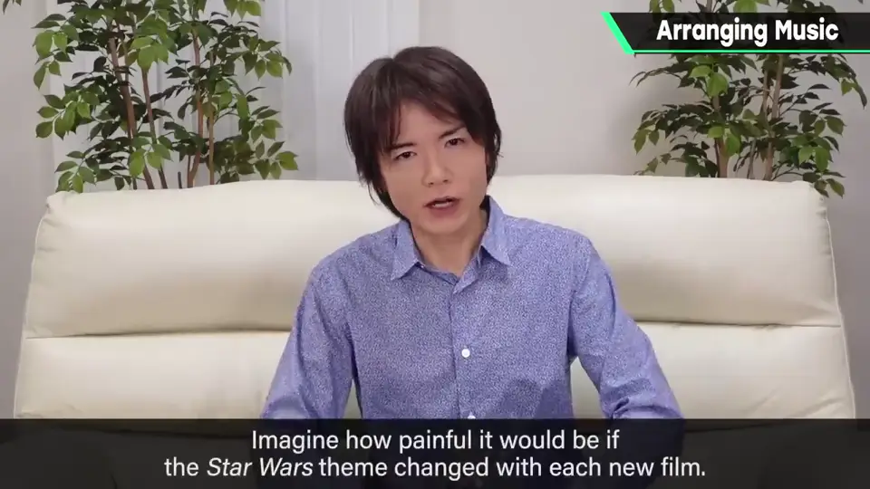
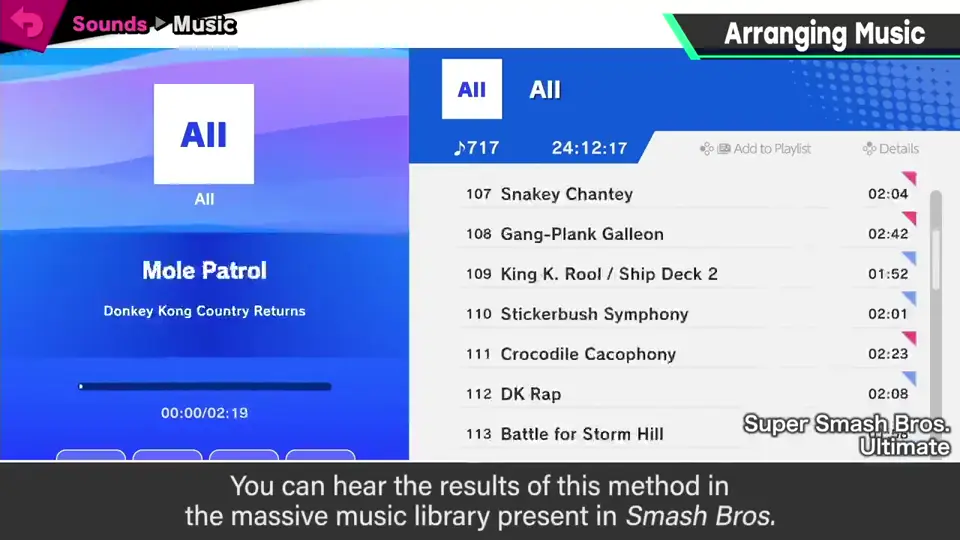
自测题
1. 改编要点中关于时长的要求是什么？
限时 2 分（《特别版》2 分半）内结束，刚好听到一点循环开头。 1:35
2. 为什么樱井的监修要经过声音导演？
他感觉上懂但没有音乐专业术语，通过声音导演转达最好。 2:55
3. 樱井改编时最看重什么？
主旋律与原曲相同，哼出来大致一样，保持同一性。 3:30